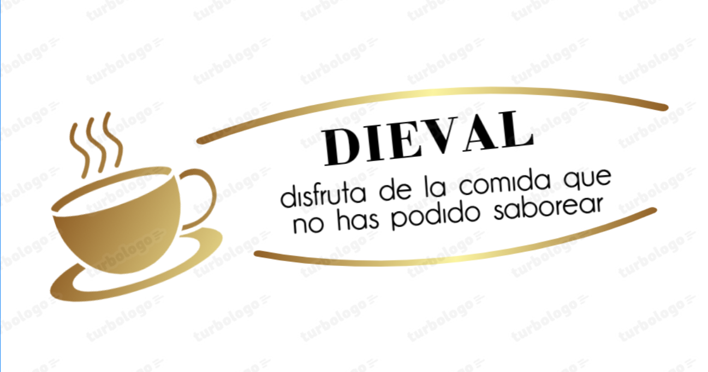

Bienvenidos a este restaurante en el que ustedes disfrutaran de una experiencia única de los sabores colombianos.
Queremos que sepan como llegamos aquí y esperamos que no tengan ningún problema, los atenderemos de la mejor forma que podamos, espero que disfruten.
Pueden ver nuestra historia através de este enlace.
HISTORIA DIEVAL 